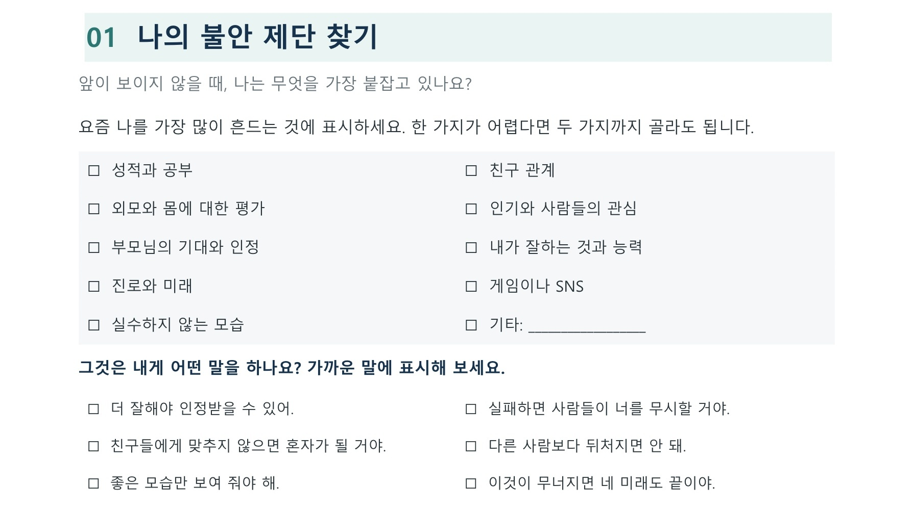

01

나의 불안 제단 찾기
앞이 보이지 않을 때 내가 가장 붙잡는 것은 무엇인지 발견합니다.
학생이 하는 일
성적, 친구 관계, 외모, 인기, 부모님의 인정, 능력, 진로, 게임·SNS 가운데 요즘 자신을 가장 많이 흔드는 것을 한두 개 표시합니다.
이어지는 질문
“그것이 요즘 너에게 어떤 말을 하고 있니?” 문장 선택지에서 고르거나 자기 말로 적게 합니다.
소그룹 활동지 ①

아테네 사람들은 미래가 불안해서 알지 못하는 신에게까지 제단을 세웠습니다. 우리도 불안할 때 무엇인가를 꼭 붙잡으려고 해요. 지금 나를 가장 흔드는 것을 조용히 표시해 봅시다. 다른 사람에게 보여 주지 않아도 괜찮습니다.
붙잡는 것: 성적
마음속 말: “이번 시험을 못 보면 앞으로도 계속 못할 거야.”
마음속 말: “이번 시험을 못 보면 앞으로도 계속 못할 거야.”
한 가지를 고르지 못하면 두 개까지 허용하세요. “없어요”라고 하면 최근 마음이 자주 쓰이는 일이나 잃을까 걱정되는 것을 떠올리도록 돕습니다.